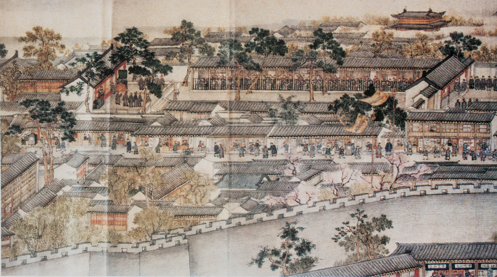
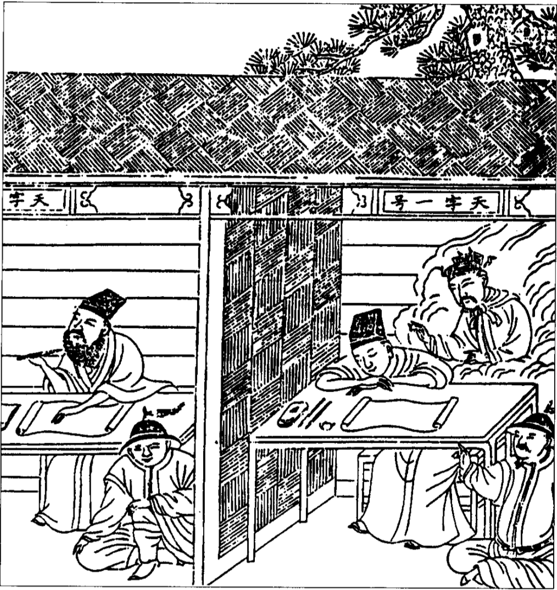
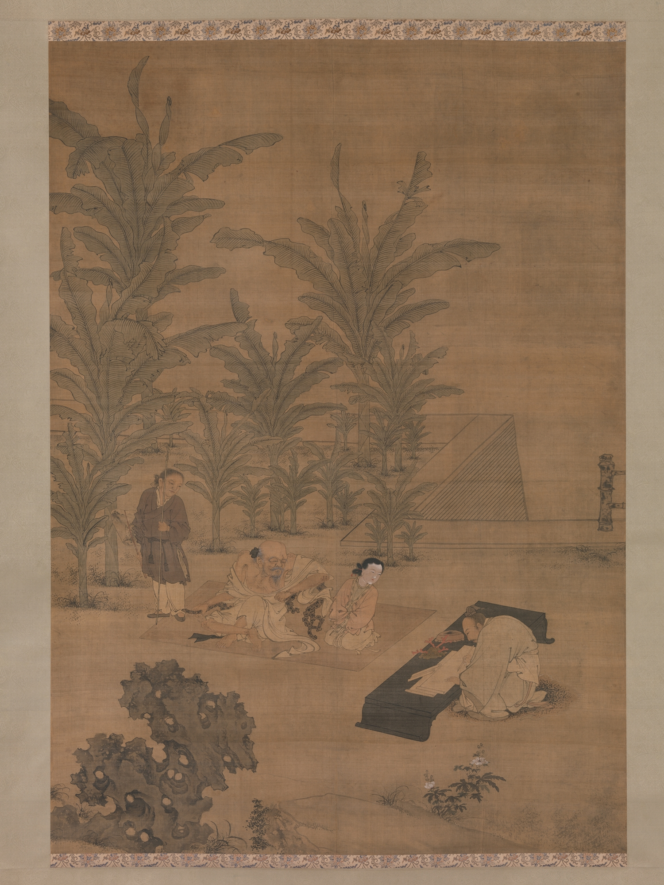
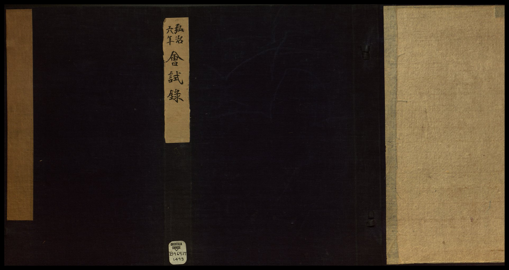
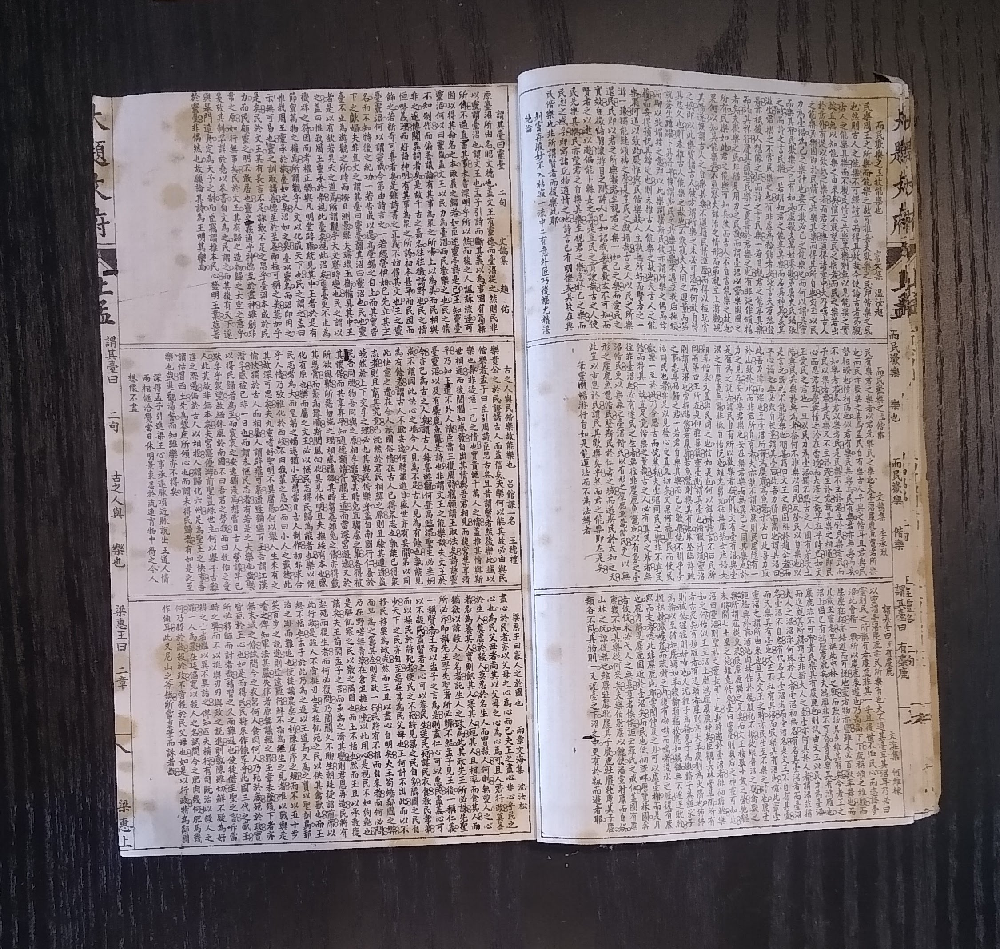
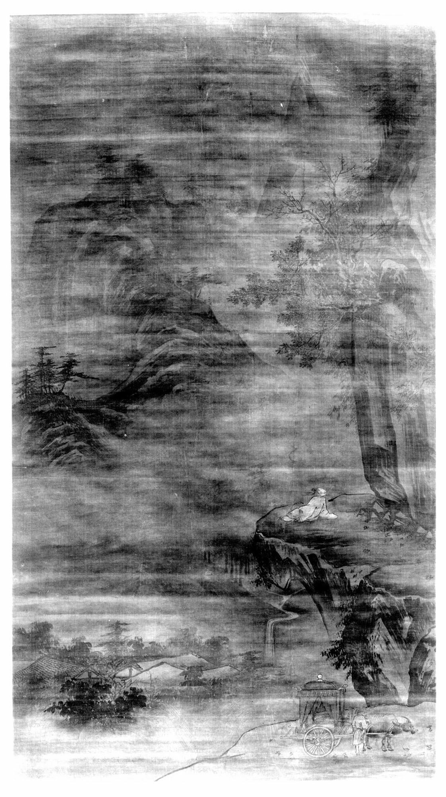
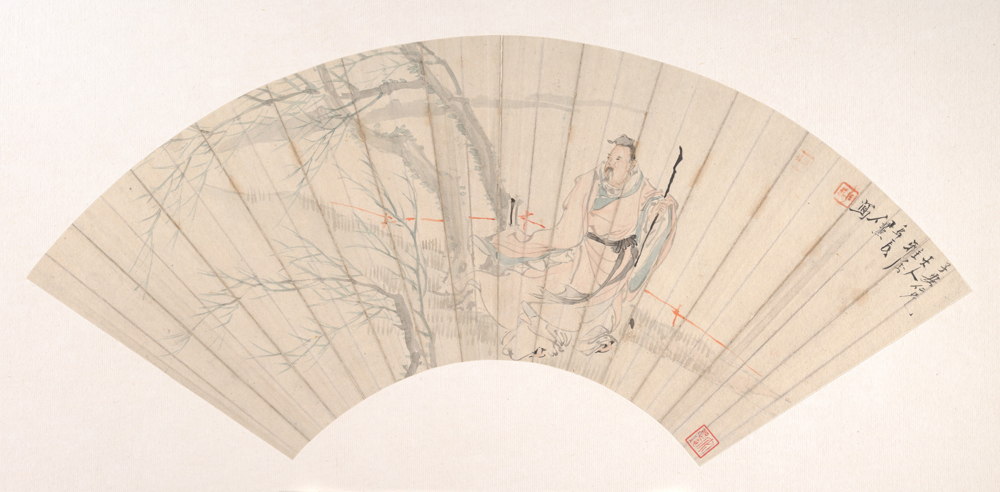

Historical inquiry · Ming and Qing China
Merit
or Privilege?
The Imperial Examination System in Ming and Qing China
Did examinations broaden social mobility or reproduce social inequality in imperial China?
How the imperial examination system created opportunities for people to become government officials while also potentially favoring wealthy and educated families.
Explore the investigationExamination hall in Suzhou · Xu Yang, Qing dynasty, 1736–1796 · Liaoning Provincial Museum

Historical examination-cell illustration, 1605
Part 1
Part 2


Metropolitan Civil Examination Records, 1493 · Library of Congress
Part 3 · AI-generated claims
Part 4 · Verified historical findings
Primary source gallery
The Kangxi edict, unaltered
These scans are historical evidence. Open either page to examine the original source at a larger scale.

Part 5 · AI claims checked against evidence
Part 6 · Interpretation


Part 7 · Reflection
Sources & credits